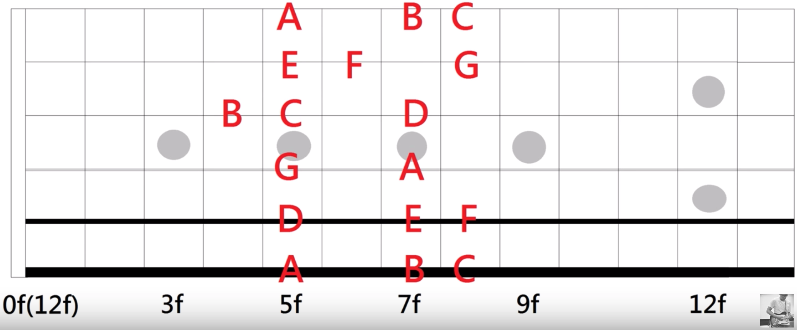
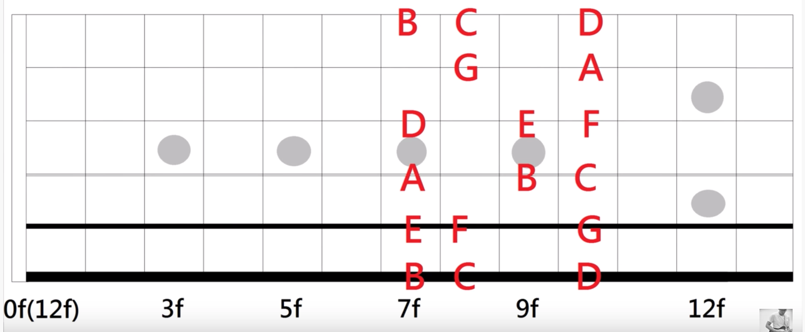

Introduction
基础
吉他音阶
大调音阶与小调音阶
音程
节奏
和弦
和弦
初学者必学的和弦
进阶和弦
封闭和弦
简化和弦
CAGED Pattern
音程和弦推算记忆法
音程推算记忆法
和弦推算记忆法
转调
转G大调
吉他练习日课表
音阶
六度双音练习
三度双音练习
八度双音练习
自然音阶指型
和弦
快速推算封闭和弦
顺阶三和弦
延伸和弦
自然泛音
流行歌常用和弦在12个调上的弹法
搞懂所有现代和弦记号
C和弦的六种按法
Am和弦的六种按法
增减和弦的Triad按法
节奏
16分音符的六种基本刷法
在刷弦节奏中加入32分音符
即兴
曲目
资料
Published with GitBook
自然音阶指型
自然音阶指型
Mi型
Sol型
La型

Do型

Re型
参考
葉宇峻彈吉他#34 自然音階指型mi型 Natural Scale Pattern
葉宇峻彈吉他#42 自然音階指型sol型 Natural Scale Pattern
葉宇峻彈吉他#51 自然音階指型 La 型 Natural Scale Pattern
葉宇峻彈吉他#65 自然音階指型 Do(Ti) 型 Natural Scale Pattern
葉宇峻彈吉他#83 自然音階指型Re型 Natural Scale Pattern
results matching "
"
No results matching "
"